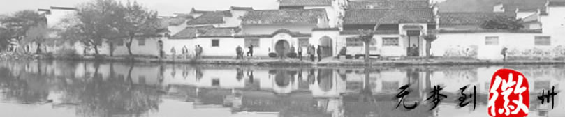

徽州是徽商的发祥地，明清时期徽商称雄中国商界500余年，有“无徽不成镇”、“徽商遍天下”之说。徽文化也成为中外学者重点研究的中华三大地域文化之一。1987年，国务院批准改徽州地区为黄山市。
徽州是徽商的发祥地，明清时期徽商称雄中国商界500余年，有“无徽不成镇”、“徽商遍天下”之说。徽文化也成为中外学者重点研究的中华三大地域文化之一。1987年，国务院批准改徽州地区为黄山市。 
徽州，简称“徽”，位于新安江上游，古称歙州，又名新安，宋徽宗宣和三年改歙州为徽州，从此历宋元明清四代，统一府六县（歙县、黟县、休宁、婺源、绩溪、祁门），辖境为今黄山市、绩溪县及江西婺源县，行政版图相对稳定。
徽州是徽商的发祥地，明清时期徽商称雄中国商界500余年，有“无徽不成镇”、“徽商遍天下”之说。徽文化也成为中外学者重点研究的中华三大地域文化之一。1987年，国务院批准改徽州地区为黄山市。
徽州文化是一个极具地方特色的区域文化，其内容广博深邃，全息包容了中国封建社会后期民间经济、社会、生活与文化的基本内容，被誉为是中国封建社会后期的典型标本。学术界对其的研究，至少经历了大半个世纪，80年代以后更趋火热，逐渐成为一门相对独立的地方学"徽学"，与敦煌学和藏学一同被誉为走向世界的中国三大地方显学。